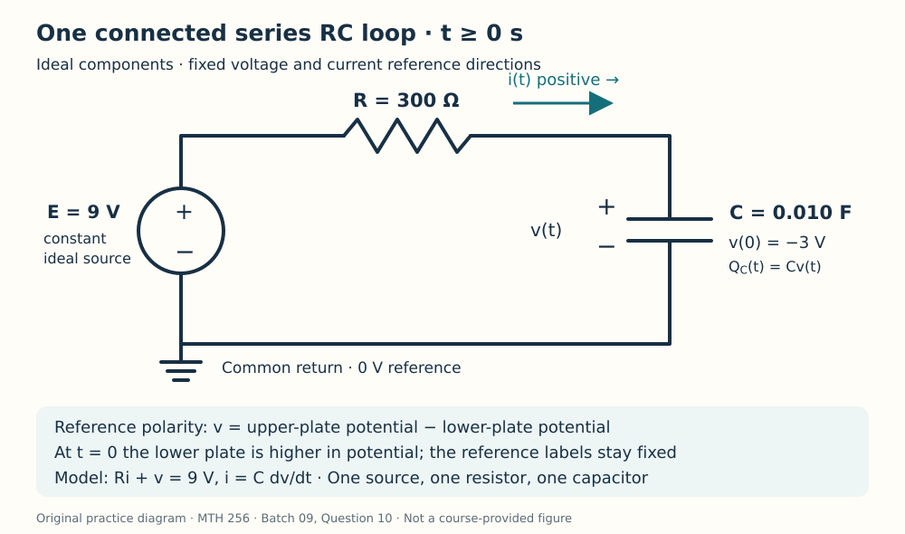

Course practice / Batch 09 / 2026-10-11 PDT
MTH 256
一阶微分方程
First-order differential equations · 非线性解验证、平衡点与方向场、分离变量、积分因子，以及不同冷却速率、指数增长追赶、逻辑斯蒂人均增长、分阶段混合与反向初始电压的 RC 模型
A nonlinear equation can have two easily checked branches
Consider \(yy^{\prime}=t\), with the initial condition y(0) = 3, and the candidates \(u(t)=\sqrt{t^2+9}\) and \(w(t)=-\sqrt{t^2+9}\). The square root means the nonnegative real root. Both t and y are dimensionless; consider real t.
- Identify the independent variable, dependent variable, and order. Is this equation linear in y? Explain using its left-hand side.
- Differentiate each candidate and verify whether it satisfies the differential equation for every real t.
- Check the initial condition separately for each candidate. Which candidate solves the stated IVP? Find its initial slope from both the equation and its derivative.
- For the candidate that solves the IVP, determine the signs of its derivative for t < 0 and t > 0. Find its minimum value and when it occurs. Does its zero initial slope mean it is a constant solution?
中文提示（不含解答）
乘积中既有未知函数又有它的导数；验证方程后，还要单独代入初值。导数在一个时刻为零不等于处处为零。
Two zero-slope rows send solutions in different directions
For \(y^{\prime}=y^2-1\), both t and y are dimensionless. Put t on the horizontal axis and y on the vertical axis.
- Calculate the slopes at all ten points with \(t\in\{0,2\}\) and \(y\in\{-2,-1,0,1,2\}\), then sketch a short line segment at each point.
- Explain why slopes repeat across the two columns. Identify every constant equilibrium solution.
- Use the sign of \(y^{\prime}\) on y < −1, −1 < y < 1, and y > 1 to classify each equilibrium as attracting or repelling.
- For a solution starting at y(0) = 0, state its initial slope and the direction it initially moves. Which equilibrium is indicated as its long-term destination by the phase line? Do not solve the differential equation.
中文提示（不含解答）
先分解右端并标出两个零点，再逐段判断符号；吸引或排斥要看平衡位置两侧的箭头。
A growing response with a finite ceiling
Solve \(y^{\prime}=(y+1)/(t+1)^2\), y(0) = 1, for \(t\ge0\). Both variables are dimensionless.
- Check for a constant solution before dividing by a factor involving y. Separate variables and solve the IVP.
- Verify the differential equation and initial condition. Find y(1) exactly and to three decimals.
- Show whether the solution increases or decreases for t ≥ 0. Find its long-term limit and determine whether that limiting value is reached at any finite time.
- Find the first time y = 3, exactly and to three decimals. Can this solution reach y = 5 for t ≥ 0? Explain using the limiting value.
中文提示（不含解答）
把 y + 1 当作一个整体分离变量；积分后的指数随时间有上界，所以增长不一定意味着无界。
An integrating factor turns the problem into a straight line
For \(t\ge0\), solve \(y^{\prime}-y/(t+1)=t+1\), y(0) = 2. Both variables are dimensionless.
- Find an integrating factor and show the resulting product-derivative equation.
- Obtain y(t), then verify the differential equation and initial value. Find y(3) and the initial slope exactly.
- Define the normalized response \(z(t)=y(t)/(t+1)\). Find z(t) and its derivative. Explain how the integrating-factor calculation makes this normalized response simpler than y(t).
- Find the first time y = 12. Use your derivative to justify that there is exactly one such time for t ≥ 0. Does the negative coefficient of y in the standard-form equation force the solution to decrease?
中文提示（不含解答）
积分因子会把左端合成一个乘积的导数；判断增减应看求出的导数，不能只看方程中某一个系数的正负。
A response can cross zero before settling
Solve \(y^{\prime}+y=4\), y(0) = −2, for \(t\ge0\). Both t and y are dimensionless; negative values of y are allowed.
- Find an integrating factor, show the product-derivative equation, and solve the IVP.
- Verify the equation and initial value. Find the initial slope and the first time the solution crosses y = 0, exactly and to three decimals.
- Find the first time y = 2, exactly and to three decimals. Compare the elapsed time from y = −2 to y = 0 with the elapsed time from y = 0 to y = 2. Are equal increases in y completed in equal times?
- Find the equilibrium and long-term limit. Use the signs of y′ and y − 4 to show whether the solution can overshoot the equilibrium at a finite time.
中文提示（不含解答）
到达时刻和一段过程的持续时间不同；先求两个目标的时刻，再相减。允许负值的响应不需要在过零处停止。
Two cooling rates create a temporary temperature gap
Two separate samples both start at 90 °C in a room held at 18 °C. Sample A follows \(T_A^{\prime}=-0.20(T_A-18)\); sample B follows \(T_B^{\prime}=-0.10(T_B-18)\). Time t is in minutes, and the rate constants are in min\(^{-1}\). The samples do not exchange heat with one another. Use these models for \(t\ge0\).
- Write and solve an IVP for each sample. Find their initial cooling rates, with units.
- Define the signed temperature gap \(D(t)=T_B(t)-T_A(t)\). Find D(t), D(0), and its long-term limit. Which sample is warmer at every finite t > 0?
- Find when the temperature gap is greatest, exactly and to two decimals in minutes. Use derivative signs to justify that it is a maximum, then find the maximum gap.
- Find both sample temperatures at that time. Explain why the gap eventually shrinks even though sample A cools faster initially. Do the sample temperatures become exactly equal again at any finite positive time?
中文提示（不含解答）
分别求温度后再作差；温差的极值由温差的导数决定，并不是由某一个样品的最低温度决定。
A smaller culture can catch a larger one
Two independent cultures grow exponentially without removals or carrying-capacity limits. Culture A starts with 120 organisms and doubles every 6 hours. Culture B starts with 80 organisms and doubles every 4 hours. Treat population as continuous, use t in hours, and assume each fixed proportional-growth model applies for all \(t\ge0\).
- Determine the growth constants \(r_A\) and \(r_B\), including units. Write and solve the IVP for each population.
- Calculate both initial growth rates exactly in organisms/hour. Are they equal? Does equality of the initial growth rates mean the two growth constants are equal?
- Find the first time the populations are equal, exactly and to three decimals in hours. Find their common population at that time exactly.
- Find both populations at t = 12 h and the ratio B(t)/A(t) for general t. Use that ratio to determine which culture is larger before and after the crossing, and explain why there can be only one crossing for t ≥ 0.
中文提示（不含解答）
倍增时间决定比例增长常数；比较两条指数曲线时，先求比值通常比直接比较两个指数式更简单。
Calibrate a logistic model from its initial growth rate
A culture follows \(N^{\prime}=rN(1-N/720)\), with N(0) = 120 organisms. The carrying capacity is 720 organisms, time t is in days, and the unknown constant r > 0 has units day\(^{-1}\). The measured initial net growth rate is 18 organisms/day. Treat N as continuous and use the fitted model for \(t\ge0\).
- Determine r from the initial count and growth rate. Find the nonnegative equilibrium populations and classify them using slope signs.
- Solve the IVP by separation. Verify the initial count and initial rate, and find the long-term limit.
- Find the initial per-capita net growth rate \(N^{\prime}/N\). Find the population and first time at which this per-capita rate is half its initial value. Give the time exactly and to two decimals in days.
- Find the population and time at which the total net growth rate is greatest, and find that greatest rate. Give the time exactly and to two decimals. Does halving the initial per-capita rate happen before or after the maximum total rate? Explain why the total and per-capita rates answer different questions.
中文提示（不含解答）
总增长率是每天增加的数量，人均增长率是总增长率除以当前数量；两者的极值或指定比例不必在同一时刻出现。
Dilute a tank, then bring it back to its starting concentration
A tank initially contains 120 L of liquid with 6.0 kg of dissolved salt. Liquid enters at 6 L/min and perfectly mixed liquid leaves at 6 L/min. Initially the inlet concentration is 0.020 kg/L. At the first time the tank concentration reaches 0.030 kg/L, the inlet concentration switches instantly to 0.060 kg/L; both volume flow rates stay unchanged. Stop at the first later time the tank concentration reaches 0.050 kg/L. Assume perfect mixing, no evaporation, no instantaneous addition of salt at the switch, and no other losses. Let S(t) be salt mass in kg, C(t) = S(t)/V(t) concentration in kg/L, and t time in minutes.
- Find the volume and write and solve the first-stage IVP for S(t). Find C(t) and the switching time \(t_s\), exactly and to three decimals.
- Write and solve the second-stage IVP using elapsed time \(u=t-t_s\). Find the duration of that stage and the final time measured from the original start, exactly and to three decimals.
- Check that salt mass and concentration are continuous at the switch. Find the concentration rate immediately before and immediately after it, with units. Explain why the switch is the time of minimum concentration.
- Find the total salt admitted and total salt removed over both stages, exactly and to four decimal places in kg. Check the overall balance against the final salt mass. Why are the admitted and removed salt masses equal despite the changing concentration?
中文提示（不含解答）
切换时刻由第一阶段的浓度目标确定；第二阶段从该时刻的盐量重新设初值，最后用整体守恒检查累计流入和流出。
A capacitor starts with voltage opposite to the source
The diagram shows one series loop with an ideal constant 9 V source, a resistor R = 300 Ω, and a capacitor C = 0.010 F. For t ≥ 0 the loop remains connected. The capacitor voltage v(t) is defined as the potential at the upper plate minus that at the lower plate, with v(0) = −3 V. Thus the lower plate initially has the higher potential, despite the fixed reference labels. Current i(t), in amperes, is positive clockwise, into the upper plate. The labeled source polarity gives \(Ri+v=9\). Use t in seconds; assume ideal components. Let \(Q_C(t)=Cv(t)\) be the signed charge on the upper capacitor plate.
- Write and solve the IVP for v(t), and find the RC time constant. Verify the initial voltage and differential equation.
- Find i(t) and \(Q_C(t)\), including their initial values and long-term limits. Use mA for current. Is the defined current positive or negative while v is still negative?
- Find the first time v = 0, exactly and to three decimals. Find the current and resistor voltage then, and check the loop-voltage equation. How much signed charge has passed into the upper plate from t = 0 to that instant? Does zero capacitor voltage imply zero current?
- Find the first time v = 6 V, exactly and to three decimals, and the elapsed time from v = 0 to v = 6 V. Find the signed charge delivered into the upper plate during each interval, from −3 V to 0 V and from 0 V to 6 V. Explain why the total charge delivered since t = 0 differs from the capacitor's signed charge at the final instant.

中文提示（不含解答）
电压正负由固定参考方向决定；通过某段时间的电荷量等于电容极板电荷的变化，不一定等于最终极板上已有的电荷。